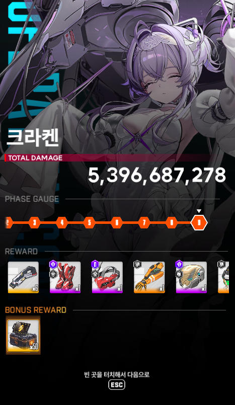
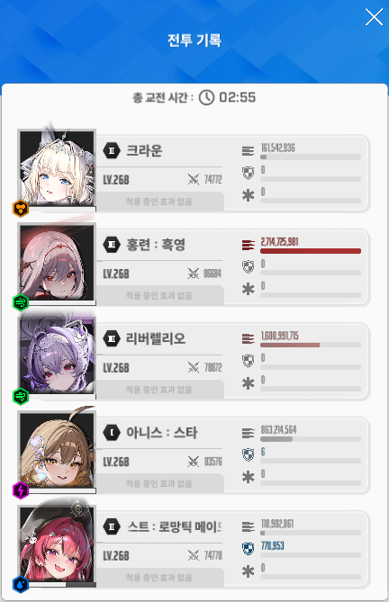

싱크 268
조합 아크메흑버
선버 흑련
좋은 공략이 이미 많을테지만 견적 참고하는데 도움이 될까 해서 몇자 적어봄.
흑련 선버 써야 택틱 진행이 매끄러움
다만 리버 공증 옵션이 없는 경우 흑련이 차속버프를 못받는 문제가 생길 수 있음.
크라운 1스에 붙은 15초짜리 버프 때문인데, 자세한건 관련내용을 따로 찾아보길.
요점은 1페이즈 촉수 파괴 타이밍 조절
아래는 버스트 사용 족보와 세부 코멘트임
2:57 메흑
촉수코어 타겟팅
2:44 크버
2:32 메흑
촉수(1),(2)를 충분히 빠르게 깼다면 크라운 실드가 남아있음
2:19 크버
리버 버스트 초반 3타는 매우 강력함.
촉수 코어 타격하여 딜 효율은 살리되,
촉수(3)이 빨리 깨지지 않도록 주의
촉수체력 절반은 남기고 본체 치다가,
촉수내려치기 패턴 전조가 시작되면 촉수를 깨서 넘기기
2:06 크흑
1:53 메버
촉수(4) 깨지지 않도록 적당 체력 남기고 본체 위주 타격
노란 올챙이 미사일이 매우 아파지니 개별 엄폐에 신경써야함
1:40 크흑
1:27 크버
족자패턴
전체엄폐 - 조작전환(크라운) - 머신건 예열 - esc활용 7연 저지
1:10 메흑
0:57 크버
0:45 크흑
0:32 메버
전체광역기 엄폐
0:20 크흑
0:07 메버
## 코어 타격 편의를 위해 커서 동기화는 해제했음.
## 조준점을 코어에 갖다대고 클릭 유지하면 움직이는 코어를 따라다님.
## 본인 화면 해상도에 따라 조준점 이동속도를 알맞게 조정하는 것을 추천.